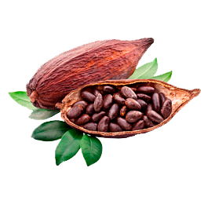
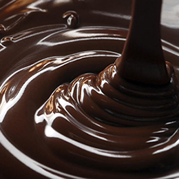
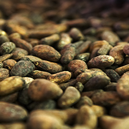
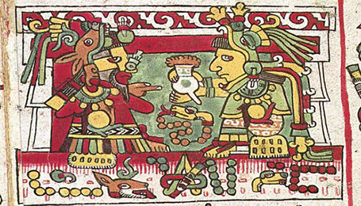

Chocolate
A delícia que faz bem
Historia

O cacaueiro, é uma planta nativa de uma região que vai do México, passando pela América Central até a região tropical da América do Sul, que vem sendo cultivada por pelo menos três mil anos na região.Os primeiros registros de seu uso datam do período Olmeca. No entanto, existem evidências que indicam cultivo anterior a esse período. Desde sua domesticação o cacau é usado como bebida e, depois, como ingrediente para alimentos. Durante a civilização maia era cultivado e, a partir de suas sementes era feita uma bebida amarga chamada xocoatl, geralmente temperada com baunilha e pimenta. O xocoatl, acreditava-se, combatia o cansaço além de ser afrodisíaco.
Kakaw ('cacau') escrito na língua maia. A palavra foi descrita de diversas outras maneiras nos antigos textos maias.
Alguns dos vestígios mais antigos de uma plantação de cacau foi datado de 1150 a 1400 a.C., tendo sido encontrado em Puerto Escondido, localidade do Departamento de Cortés, em Honduras. Pelo tipo de recipiente encontrado e pela análise de seu conteúdo, concluiu-se que produzia-se uma bebida alcoólica pela fermentação dos açúcares contidos na polpa que envolve os grãos, bebida essa que continua a ser feita até hoje em partes da América Latina. Resíduos de chocolate encontrados numa peça de cerâmica maia de Río Azul, na Guatemala, sugerem que já era utilizado como bebida por volta do ano 400 d.C. Documentos maias e astecas relatam que o chocolate era usado tanto para fins cerimoniais como no cotidiano, sendo, no entanto, consumido apenas pela elite.
No Brasil
Apesar de ter sua origem no continente americano, a produção e o consumo de chocolate no Brasil foi introduzido pela colonização dos europeus que já haviam aprimorado suas formas de produção e consumo. A cultura cacaueira foi introduzida no Brasil no século XVII pelos portugueses, sendo um importante produto da Amazônia Portuguesa A partir do Brasil levaram também a Guiné, de onde ele iria-se difundir para outras colônias europeias da África Ocidental e mais tarde para o Sudeste asiático e para a Oceania. O cultivo brasileiro em larga escala teve início no século XIX, na região de Ilhéus, no sul da Bahia. As condições climáticas adequadas fizeram com que o país liderasse a produção mundial de cacau no período entre 1905 e 1910. Em 1993 a produção mundial de cacau in natura era de 2,5 milhões de toneladas (duas mil vezes maior que o tesouro de Montezuma), procedentes em 75% de cinco países: Costa do Marfim (840.000 toneladas), Brasil (300.000), Indonésia (280.000), Gana (240.000) e Malásia (195.000). Na safra internacional de 2000/2001 em função da existência de pragas na cultura, especialmente a vassoura-de-bruxa o Brasil passou a ocupar o 5º lugar, com uma produção de 150.000 toneladas.
Somente a partir da segunda metade do século Século XIX algumas fábricas foram instaladas no Brasil. Em Porto Alegre os irmãos Franz e Max Neugebauer, imigrantes alemães, juntamente com o sócio Fritz Gerhardt fundaram a empresa Neugebauer Irmãos & Gerhardt em 1891, tendo sido a mais antiga fábrica brasileira de chocolate. Em 2008, a Nestlé, a Kraft e a Garoto detinham 90% do mercado brasileiro, enquanto a Mars conta com 3% e o restante do mercado é tomado por centenas de companhias regionais A Kraft Foods é a segunda maior fabricante de chocolates do Brasil, com 35,8% das vendas em 2009, segundo a Nielsen, atrás apenas da Nestlé e de sua controlada, a Garoto, que têm 22,5% e 22% do mercado, respectivamente. Além dessas existem outras marcas, são 21 redes que trabalham com chocolate e buscam expansão através de franchising. Atualmente o Brasil é o quarto produtor mundial de chocolate. Um teste realizado pela PRO Teste, em Novembro de 2010, com algumas marcas brasileiras de chocolate ao leite revelam que o chocolate produzido no Brasil possui boa higiene e qualidade nutricional também possuindo um bom sabor, entretanto a organização reivindica das autoridades que regras mais claras sejam definidas para garantir a qualidade e a identidade dos chocolates, haja vista a quantidade elevada de sacarose.

uma representação de reis da cultutu mixteca
compartilhando uma bebida de chocolate.